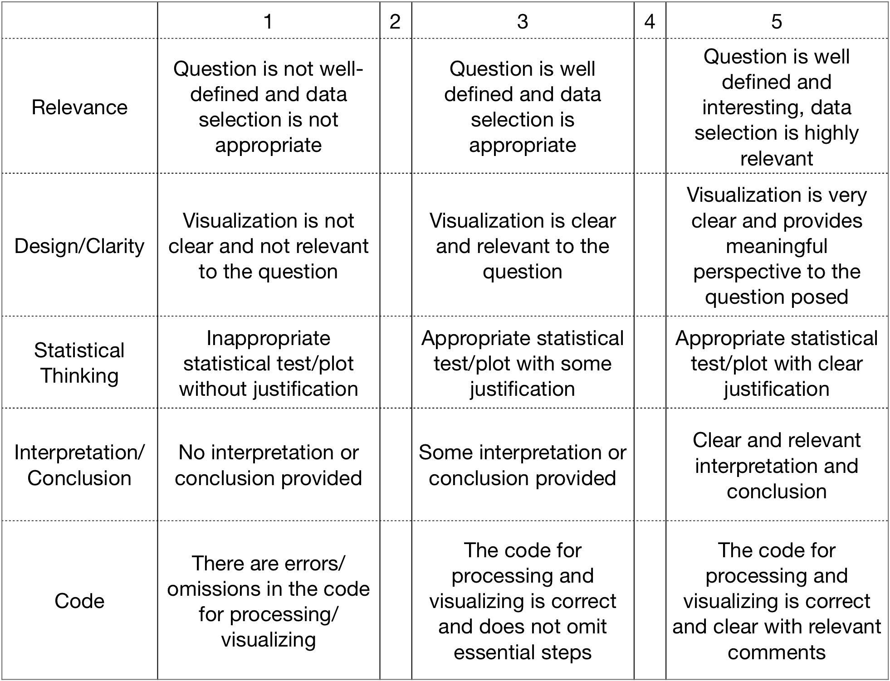

Mini-Datathon#
For this session, we will be providing 3 datasets for the mini-datathon. However, you are free to choose other datasets, but do check with us first before proceeding.
The aim of this mini-datathon is to see how we can apply what we learnt to
process and tidy the data
explore the data and define a question of interest
visualize the relevant data
use the appropriate statistical test/plot
present and interpret the plot(s)
For the mini-datathon, please choose ONE dataset and prepare a short slide presentation (e.g. 3-4 slides) of your analysis. We will provide the links on the day of the mini-datathon.
The slides should contain the following:
The team name and group members
1 paragraph stating question(s) of interest
1-2 plots to address the question(s)
1 paragraph stating your choice of the statistical plot and your interpretation
The code used to process and plot the data (include it as an appendix slide for documentation)
We will review the submissions using the following rubric:

You may find the cheatsheets here:
base R: rstudio/cheatsheets
Tidy data transformation: https://raw.githubusercontent.com/rstudio/cheatsheets/main/data-transformation.pdf
ggplot2: https://raw.githubusercontent.com/rstudio/cheatsheets/main/data-visualization.pdf
We have also included a notebook that summarizes the statistical tables/tests/plots (09 - Summary)
Dataset 1: Heart Failure Dataset#
This is a dataset containing the medical records of 299 heart failure patients collected at the Faisalabad Institute of Cardiology and at the Allied Hospital in Faisalabad (Punjab, Pakistan), during April–December 2015. All 299 patients had left ventricular systolic dysfunction and had previous heart failures that put them in classes III or IV of New York Heart Association (NYHA) classification of the stages of heart failure.
The target outcome is DEATH_EVENT (0=alive, 1=dead)
Columns:
age: age of the patient (years)anaemia: decrease of red blood cells or hemoglobin (0 = no, 1 = yes)high_blood_pressure: if the patient has hypertension (0 = no, 1 = yes)creatinine_phosphokinase: level of the CPK enzyme in the blood (mcg/L)diabetes: if the patient has diabetes (0 = no, 1 = yes)ejection_fraction: percentage of blood leaving the heart at each contraction (percentage)platelets: platelets in the blood (kiloplatelets/mL)sex: woman or man (0 = woman, 1 = man)serum_creatinine: level of serum creatinine in the blood (mg/dL)serum_sodium: level of serum sodium in the blood (mEq/L)smoking: if the patient smokes or not (0 = no, 1 = yes)time: follow-up period (days)DEATH_EVENT: if the patient deceased during the follow-up period (0 = no, 1 = yes)
Source: UCI Machine Learning Repository (https://archive.ics.uci.edu/ml/datasets/Heart+failure+clinical+records)
library(tidyverse)
data1 <- read_csv("https://raw.githubusercontent.com/kennethban/dataset/main/heart_failure_clinical_records_dataset.csv")
head(data1)
# start here
── Attaching packages ─────────────────────────────────────────────────────────────────── tidyverse 1.3.1 ──
✔ ggplot2 3.3.5 ✔ purrr 0.3.4
✔ tibble 3.1.6 ✔ dplyr 1.0.8
✔ tidyr 1.2.0 ✔ stringr 1.4.0
✔ readr 2.1.2 ✔ forcats 0.5.1
── Conflicts ────────────────────────────────────────────────────────────────────── tidyverse_conflicts() ──
✖ dplyr::filter() masks stats::filter()
✖ dplyr::lag() masks stats::lag()
Rows: 299 Columns: 13
── Column specification ────────────────────────────────────────────────────────────────────────────────────
Delimiter: ","
dbl (13): age, anaemia, creatinine_phosphokinase, diabetes, ejection_fractio...
ℹ Use `spec()` to retrieve the full column specification for this data.
ℹ Specify the column types or set `show_col_types = FALSE` to quiet this message.
| age | anaemia | creatinine_phosphokinase | diabetes | ejection_fraction | high_blood_pressure | platelets | serum_creatinine | serum_sodium | sex | smoking | time | DEATH_EVENT |
|---|---|---|---|---|---|---|---|---|---|---|---|---|
| <dbl> | <dbl> | <dbl> | <dbl> | <dbl> | <dbl> | <dbl> | <dbl> | <dbl> | <dbl> | <dbl> | <dbl> | <dbl> |
| 75 | 0 | 582 | 0 | 20 | 1 | 265000 | 1.9 | 130 | 1 | 0 | 4 | 1 |
| 55 | 0 | 7861 | 0 | 38 | 0 | 263358 | 1.1 | 136 | 1 | 0 | 6 | 1 |
| 65 | 0 | 146 | 0 | 20 | 0 | 162000 | 1.3 | 129 | 1 | 1 | 7 | 1 |
| 50 | 1 | 111 | 0 | 20 | 0 | 210000 | 1.9 | 137 | 1 | 0 | 7 | 1 |
| 65 | 1 | 160 | 1 | 20 | 0 | 327000 | 2.7 | 116 | 0 | 0 | 8 | 1 |
| 90 | 1 | 47 | 0 | 40 | 1 | 204000 | 2.1 | 132 | 1 | 1 | 8 | 1 |
Dataset 2: Pima Indians Diabetes Dataset#
This dataset is originally from the National Institute of Diabetes and Digestive and Kidney Diseases. The objective of the dataset is to diagnostically predict whether or not a patient has diabetes, based on certain diagnostic measurements included in the dataset. Several constraints were placed on the selection of these instances from a larger database. In particular, all patients here are females at least 21 years old of Pima Indian heritage.
Columns:
Pregnancies: Number of times pregnantGlucose: Plasma glucose concentration a 2 hours in an oral glucose tolerance test (mg/dL)BloodPressure: Diastolic blood pressure (mmHg)SkinThickness: Triceps skin fold thickness (mm)Insulin: 2-Hour serum insulin (micro U/ml)BMI: Body mass index (weight in kg/(height in m)^2)DiabetesPedigreeFunction: Diabetes pedigree function (derived by study authors - may ignore)Age: Age (years)Outcome: Onset of non-insulin-dependent diabetes mellitus (DM) within a five-year period (0 = no, 1 = yes)
Source: Kaggle (https://www.kaggle.com/uciml/pima-indians-diabetes-database)
library(tidyverse)
data2 <- read_csv("https://raw.githubusercontent.com/kennethban/dataset/main/diabetes.csv")
head(data2)
# start here
Rows: 768 Columns: 9
── Column specification ────────────────────────────────────────────────────────────────────────────────────
Delimiter: ","
dbl (9): Pregnancies, Glucose, BloodPressure, SkinThickness, Insulin, BMI, D...
ℹ Use `spec()` to retrieve the full column specification for this data.
ℹ Specify the column types or set `show_col_types = FALSE` to quiet this message.
| Pregnancies | Glucose | BloodPressure | SkinThickness | Insulin | BMI | DiabetesPedigreeFunction | Age | Outcome |
|---|---|---|---|---|---|---|---|---|
| <dbl> | <dbl> | <dbl> | <dbl> | <dbl> | <dbl> | <dbl> | <dbl> | <dbl> |
| 6 | 148 | 72 | 35 | 0 | 33.6 | 0.627 | 50 | 1 |
| 1 | 85 | 66 | 29 | 0 | 26.6 | 0.351 | 31 | 0 |
| 8 | 183 | 64 | 0 | 0 | 23.3 | 0.672 | 32 | 1 |
| 1 | 89 | 66 | 23 | 94 | 28.1 | 0.167 | 21 | 0 |
| 0 | 137 | 40 | 35 | 168 | 43.1 | 2.288 | 33 | 1 |
| 5 | 116 | 74 | 0 | 0 | 25.6 | 0.201 | 30 | 0 |
Dataset 3: Hepatocellular Carcinoma Survival#
This dataset was obtained from a University Hospital in Portugal and contains several demographic, risk factors, laboratory and overall survival features of 165 patients diagnosed with HCC.
This is an heterogeneous dataset, with 23 quantitative variables, and 26 qualitative variables. The target variable is the survival at 1 year (Alive/Dead)
Columns:
Gender: M/FSymptoms: Y/NAlcohol: Y/NHBsAg: Hepatitis B Surface Antigen (Y/N)HBeAg: Hepatitis B e Antigen (Y/N)HBcAb: Hepatitis B Core Antibody (Y/N)HCVAb: Hepatitis C Virus Antibody (Y/N)Cirrhosis: Y/NEndemic: Endemic country (Y/N)Smoking: Y/NDiabetes: Y/NObesity: Y/NHemochro: Hemochromatosis (Y/N)AHT: Arterial Hypertension (Y/N)CRI: Chronic Renal Insufficiency (Y/N)HIV: Human Immunodeficiency Virus (Y/N)NASH: Nonalcoholic Steatohepatitis (Y/N)Varices: Esophageal Varices (Y/N)Spleno: Splenomegaly (Y/N)PHT: Portal Hypertension (Y/N)PVT: Portal Vein Thrombosis (Y/N)Metastasis: Liver Metastasis (Y/N)Hallmark: Radiological Hallmark (Y/N)Age: Age at diagnosis (years)Alcohol_grams_day: Grams of Alcohol per dayPacks_year: Packs of cigarettes per yearPS: Performance Status (Active/Restricted/Ambulatory/Selfcare/Disabled)Encephalopathy: Encephalopathy degree (None/Grade_I_II/Grade_III_IV)Ascites: Ascites degree (None/Mild/Moderate_Severe)INR: International Normalised RatioAFP: Alpha-Fetoprotein (ng/mL)Hb: Haemoglobin (g/dL)MCV: Mean Corpuscular Volume (fl)Leucocytes: Leukocytes(G/L)Platelets: Platelets (G/L)Albumin: Albumin (mg/dL)Total_Bil: Total Bilirubin(mg/dL)ALT: Alanine transaminase (U/L)AST: Aspartate transaminase (U/L)GGT: Gamma glutamyl transferase (U/L)ALP: Alkaline phosphatase (U/L)TP: Total Proteins (g/dL)Creatinine: Creatinine (mg/dL)Nodules: Number of NodulesMajor_dim: Major dimension of nodule (cm)Dir_Bil: Direct Bilirubin (mg/dL)Iron: Iron (mcg/dL)Sat: Oxygen Saturation (%)Ferritin: Ferritin (ng/mL)Outcome: Alive/Dead
In the original dataset, missing data represents 10.22% of the whole dataset and only eight patients have complete information in all fields. For this mini-datathon, the missing values were imputed using the missForest package
data_input <- read_csv("https://raw.githubusercontent.com/kennethban/dataset/main/hcc_survival.csv") # original with missing values
data_input %>% mutate_if(sapply(data_input, is.character), as.factor) %>%
missForest:missForest() # impute
Source: https://archive.ics.uci.edu/ml/datasets/HCC+Survival
library(tidyverse)
data3 <- read_csv("https://raw.githubusercontent.com/kennethban/dataset/main/hcc_survival_impute.csv") %>%
mutate_if(sapply(., is.character), as.factor) # strings to factors
head(data3)
# start here
Rows: 165 Columns: 50
── Column specification ────────────────────────────────────────────────────────────────────────────────────
Delimiter: ","
chr (27): Gender, Symptoms, Alcohol, HbsAg, HbeAg, HBcAb, HCVAb, Cirrhosis, ...
dbl (23): Age, Alcohol_grams_day, Packs_year, INR, AFP, Hb, MCV, Leucocytes,...
ℹ Use `spec()` to retrieve the full column specification for this data.
ℹ Specify the column types or set `show_col_types = FALSE` to quiet this message.
| Gender | Symptoms | Alcohol | HbsAg | HbeAg | HBcAb | HCVAb | Cirrhosis | Endemic | Smoking | ⋯ | ALP | TP | Creatinine | Nodules | Major_dim | Dir_Bil | Iron | Sat | Ferritin | Outcome |
|---|---|---|---|---|---|---|---|---|---|---|---|---|---|---|---|---|---|---|---|---|
| <fct> | <fct> | <fct> | <fct> | <fct> | <fct> | <fct> | <fct> | <fct> | <fct> | ⋯ | <dbl> | <dbl> | <dbl> | <dbl> | <dbl> | <dbl> | <dbl> | <dbl> | <dbl> | <fct> |
| M | N | Y | N | N | N | N | Y | N | Y | ⋯ | 150.00 | 7.100 | 0.7000 | 1 | 3.5 | 0.5000 | 123.764 | 52.0346 | 465.1570 | Alive |
| F | N | N | N | N | N | Y | Y | N | Y | ⋯ | 159.95 | 12.144 | 1.5108 | 1 | 1.8 | 0.7689 | 95.070 | 32.1664 | 259.0123 | Alive |
| M | N | Y | Y | N | Y | N | Y | N | Y | ⋯ | 109.00 | 7.000 | 2.1000 | 5 | 13.0 | 0.1000 | 28.000 | 6.0000 | 16.0000 | Alive |
| M | Y | Y | N | N | N | N | Y | N | Y | ⋯ | 174.00 | 8.100 | 1.1100 | 2 | 15.7 | 0.2000 | 83.889 | 25.5402 | 290.5700 | Dead |
| M | Y | Y | Y | N | Y | N | Y | N | Y | ⋯ | 109.00 | 6.900 | 1.8000 | 1 | 9.0 | 1.2152 | 59.000 | 15.0000 | 22.0000 | Alive |
| M | N | Y | N | N | N | N | Y | N | Y | ⋯ | 396.00 | 5.600 | 0.9000 | 1 | 10.0 | 1.4000 | 53.000 | 22.0000 | 111.0000 | Dead |